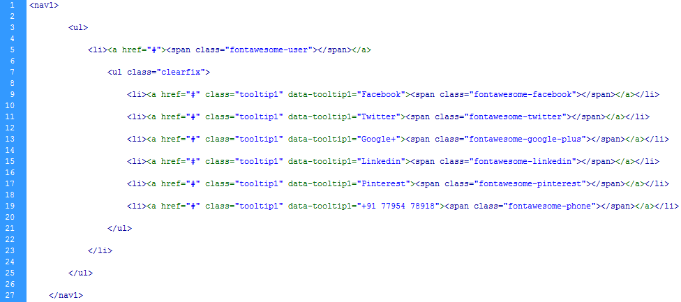

Created: 3/20/2013
By: TechZia
Email: ziaulsadat@ymail.com
Thank you for purchasing my CSS3 Fancy Menu. If you have any questions that are beyond the scope of this help file, please feel free to email via my user page contact form here. Thanks so much!
The CSS3 Sticky Contacts is created completely on HTML & CSS3. It has 7 types of animations.
If you would like to edit the colors of the contacts boxes and tooltips, you would do the following:
nav1 > ul {
top:25px;
width: 350px;
position:fixed;
}
nav1 ul li {
position: relative;
}
nav1 ul li:hover > ul {
opacity: 1;
}
nav1 ul li a {
background-color: #7CB9E8;
color: #535152;
display: block;
height: 50px;
line-height: 50px;
text-align: center;
width: 50px;
box-shadow: 0px 3px 10px #333;
}
nav1 ul li a:after {
background-color: #7CB9E8;
content: "";
display: block;
height: 8px;
left: 46px;
position: absolute;
top: 21px;
transform: rotate(45deg);
-o-transform: rotate(45deg);
-ms-transform: rotate(45deg);
-moz-transform: rotate(45deg);
-webkit-transform: rotate(45deg);
width: 8px;
z-index: 1;
}
nav1 ul li a:hover {
color: #373634;
}
nav1 ul li ul {
display: block;
left: 50px;
position: absolute;
top: 0;
opacity: 0;
transition: opacity .5s;
-o-transition: opacity .5s;
-moz-transition: opacity .5s;
-webkit-transition: opacity .5s;
}
nav1 ul li ul li {
float: left;
margin-top: 0;
}
nav1 ul li ul li a {
background-color: #FFF;
color: #7CB9E8;
position: relative;
}
nav1 ul li ul li a:after {
display: none;
}
.tooltip1:hover:before {
background-color: #7CB9E8;
content: attr(data-tooltip1);
color: #FFF;
display: block;
font-size: 12px;
height: 21px;
line-height: 21px;
padding: 0 10px;
position: absolute;
top: -18px;
white-space: nowrap;
z-index: 1;
box-shadow: 0px 3px 10px #333;
}
.tooltip1:hover:after {
background-color: #7CB9E8;
content: "";
display: block;
height: 8px;
left: 50%;
position: absolute;
top: -1px;
transform: rotate(45deg);
-ms-transform: rotate(45deg);
-moz-transform: rotate(45deg);
-webkit-transform: rotate(45deg);
width: 8px;
z-index: 1;
}
So, to ensure that your new styles are applied, make sure that they carry enough "weight" and that there isn't a style lower in the CSS file that is being applied after yours.
I have used 2 CSS files for the CSS3 Sticky Contacts.
1) font.css - Awesome Font styles
2) zistyle.css - Main Styles and animations
If you would like to edit a specific section of the site, simply find the appropriate label in the CSS file, and then scroll down until you find the appropriate style that needs to be edited.
Once again, thank you so much for purchasing CSS3 Sticky Contacts. As I said at the beginning, I'd be glad to help you if you have any questions relating to this theme. No guarantees, but I'll do my best to assist. If you have a more general question relating to the menu on CodeCanyon, you might consider visiting the forums and asking your question in the "Item Discussion" section.
TechZia